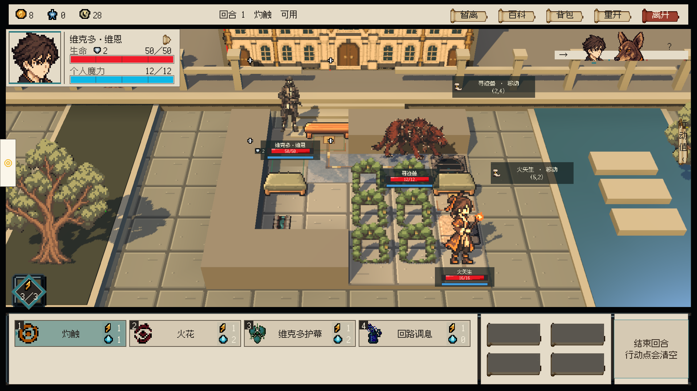

OCC · HD-2D 游戏内实装
正式入口现在默认使用立体书桌与庭院场景。开始游戏和继续游戏通过桌面开书进入对应流程；学院路线图和战斗外界面共用书桌空间，正文与操作保持清晰的二维布局。
本次 Unity 实机录制：正常开局、角色配置、学院地图、战斗与奖励流程。操作来自真实界面事件与相机投影命中检查；录制无音频。

战场保留正面俯视近景、低永久墙、共享朝向的像素面片和统一暖日光。各关卡沿用实际地图与结构；资源条、护盾、状态、公开意图、路线、预览格、右键菜单与跳字接入真实战斗。支持缩放、拖动、归中及放大视图的足点跟随。
静态建筑合批与接触遮蔽继续使用；源纹理保持原生像素与 Point 采样。离开战斗释放场景，离屏渲染匹配窗口，静止模型减少重复计算，动作期间仍逐帧更新。本轮没有进行完整光照贴图 GI 烘焙。
前一轮渲染样板